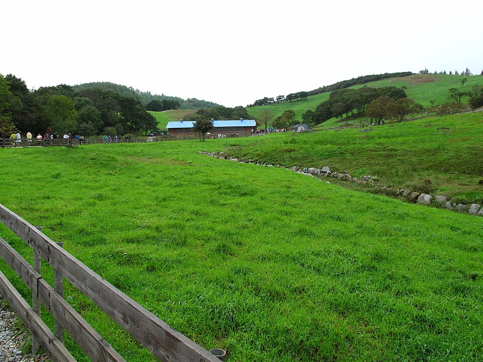

평창 검정고시 — 합격이 끝이 아니라 대학까지 가는 길

검정고시를 대학 가기 위한 과정으로 생각하고 시작하는 분이 많습니다. 그런데 막상 준비를 시작하면 합격만 목표로 잡는 계획을 세우게 됩니다. 이 둘은 같지 않습니다. 붙는 데 필요한 점수와 대학을 보고 준비하는 점수는 다르고, 출발할 때 그걸 알고 있느냐에 따라 1년 뒤가 달라집니다. 평창 검정고시를 대학까지 보고 준비하신다면 아래 순서로 정리해 보세요.
검정고시 성적이 쓰이는 방식부터 다릅니다
대입에는 크게 수시와 정시 두 갈래가 있고, 검정고시 출신에게 두 갈래는 성격이 꽤 다릅니다.
수시에서는 고등학교 생활기록부 대신 검정고시 성적이 그 자리를 대신해 반영되는 전형들이 있습니다. 이 경우 합격선인 60점과 실제 지원에 쓰이는 점수는 전혀 다른 이야기가 됩니다. 반대로 검정고시 출신을 위한 별도 기준을 두거나 지원 자체를 제한하는 곳도 있습니다. 대학과 전형마다 다르므로 반드시 그 대학의 해당 연도 모집요강을 직접 확인해야 합니다.
정시는 결국 수능 점수로 갑니다. 검정고시 성적이 직접 반영되지 않는 대신, 검정고시는 "수능에 응시할 자격"을 만들어 주는 단계가 됩니다. 정시를 볼 생각이라면 검정고시 준비 자체를 수능 과목과 겹치게 짜는 것이 유리합니다.
어느 쪽을 볼지에 따라 지금 할 일이 갈립니다
수시를 염두에 둔다면 검정고시 점수 자체를 최대한 끌어올리는 것이 그대로 입시 준비가 됩니다. 붙기만 하면 된다고 생각해 60점에 맞춰 끝내면, 1년 뒤 지원할 때 되돌릴 수 없습니다. 점수는 나중에 다시 올릴 수 없으니 처음 볼 때 올려 두는 것이 원칙입니다.
정시를 본다면 이야기가 조금 다릅니다. 검정고시는 빠르게 통과하고 남은 시간을 수능 공부에 쓰는 편이 낫습니다. 다만 이때도 국어·영어·수학·한국사는 수능과 이어지는 과목이니, 검정고시 때 대충 넘기지 말고 개념을 제대로 잡아 두면 그대로 이어집니다.
순서는 "자격 → 점수 → 수능" 입니다
가장 흔한 실수는 세 가지를 동시에 하려는 것입니다. 현실적인 순서는 이렇습니다.
먼저 고졸 검정고시 합격으로 자격을 확보합니다. 이게 없으면 다음 단계가 아예 없습니다. 그다음 점수를 어디까지 올릴지를 목표 대학의 전형 방식에 맞춰 정합니다. 마지막으로 수능 대비로 넘어갑니다. 과목 합격제가 있어 한 번에 전 과목을 붙이지 못해도 붙은 과목은 남으니, 회차를 나눠 쓰는 것도 방법입니다.
나이나 학년이 어떻게 되든 이 순서는 같습니다. 다만 남은 기간에 따라 각 단계에 쓸 수 있는 시간이 달라지므로, 시작할 때 달력에 세 단계를 나눠 그려 두는 것이 중요합니다.
평창처럼 학원가가 멀어도 됩니다
지방에서 대입을 준비할 때 가장 큰 어려움은 공부 자체보다 정보와 이동입니다. 전형이 어떻게 생겼는지 물어볼 곳이 가깝지 않고, 수업을 들으러 가는 데만 왕복 몇 시간이 듭니다. 지금은 이 부분이 화상 수업으로 상당 부분 해결됩니다. 수업을 듣는 데 드는 이동 시간이 0이 되면 그만큼이 그대로 공부 시간이 됩니다.
평창에서 이렇게 함께합니다
저희는 1:1 맞춤 과외라 합격만 보는 계획과 대입까지 보는 계획을 처음부터 다르게 짭니다. 목표가 정해지면 지금 실력에서 그 점수까지 가는 데 필요한 것만 골라 순서를 정합니다. 평창군과 인근 지역은 방문 수업이 가능하고, 거리가 멀거나 이동이 어려우면 화상(줌) 수업으로 집에서 그대로 진행합니다.